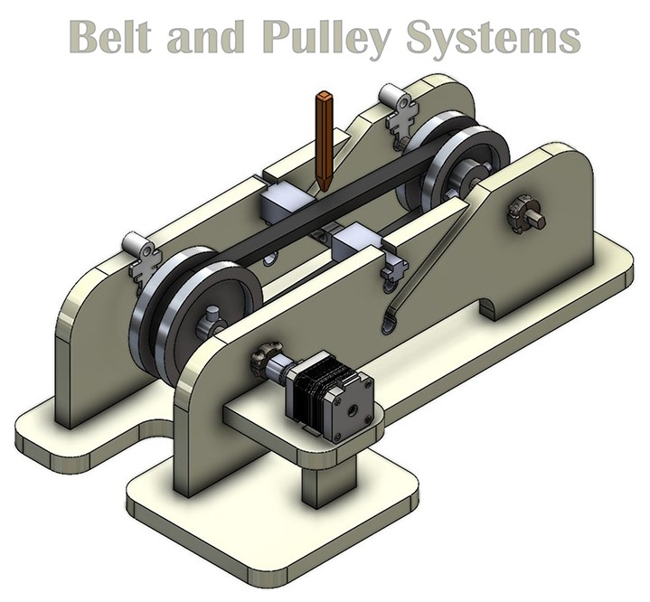

Belt and Pulley Systems
Belt and Pulley Systems: Technical Overview (Flat Belt Focus)
Definition
A belt and pulley system is a power transmission mechanism that utilizes a flexible loop, known as a belt, running on the circumference of two or more rotating wheels, known as pulleys. These systems transmit power and motion between shafts, often over considerable distances.
Primary Technical Purposes
- Power Transmission: Efficiently transmit rotational power from a driving pulley to a driven pulley.
- Velocity Ratio Modification: By using pulleys of different diameters, the angular velocity can be increased or decreased. The velocity ratio (VR) is approximately VR = Ddriven / Ddriver, where D is the pulley diameter (ignoring slip).
- Torque Modification: Inversely related to the velocity ratio; reducing speed increases torque, and vice-versa (accounting for efficiency).
- Change in Direction of Rotation (with crossed belt): An open belt drive results in the driven pulley rotating in the same direction as the driver. A crossed belt drive results in opposite directions of rotation.
- Shock and Vibration Damping: The elasticity of the belt can help absorb shock loads and dampen vibrations between shafts.
Focus: Flat Belt Systems
You are specifically using a flat belt. Key technical characteristics include:
- Belt Material: Typically made from leather, rubber, synthetic polymers, or fabric-reinforced composites.
- Pulley Surface: Flat belts run on pulleys that are usually slightly crowned (convex surface). This crowning helps to keep the belt centered on the pulley during operation, preventing it from "walking off."
- Transmission Mechanism: Power is transmitted via friction between the belt and the pulley surfaces. Sufficient belt tension is crucial for effective power transmission and to minimize slip.
- Slip: Some degree of slip (creep and frictional slip) is inherent in flat belt drives, meaning the velocity ratio is not perfectly constant, especially under varying loads.
Advantages:
- Simple and cost-effective.
- Can transmit power over long distances.
- Relatively quiet operation.
- Acts as a mechanical fuse; excessive overload can cause the belt to slip, protecting more expensive components.
Disadvantages:
- Lower power transmission capacity compared to V-belts or chain drives for a given size.
- Requires higher tension than V-belts, potentially leading to higher bearing loads.
- Susceptible to slip, especially if tension is incorrect or conditions are oily/wet.
Regarding Your Gear Sets
You mentioned: "we are using two involute teeth gear sets and two cycloidal gear sets for this, but these two are used separately."
It's important to clarify that belt and pulley systems and gear systems are distinct power transmission mechanisms.
- Belt and pulley systems transmit power through a flexible belt and friction (or positive engagement in the case of toothed belts, which are different from your specified flat belt).
- Gear systems transmit power through the direct meshing of toothed wheels (gears and pinions) with profiles like involute or cycloidal.
While both can be part of a larger machine or project to achieve different stages of power transmission or motion control, the involute and cycloidal gear sets you referred to are separate from the flat belt and pulley system itself. They would be used in different parts of your setup or for different experiments/applications, each leveraging their unique characteristics as previously discussed. For instance, a motor might drive a gear set, and the output of that gear set might then drive a belt and pulley system, or they might be used in entirely separate applications.
Belt System in the Kit
In our pulley and belt system, we measure the initial tension of the belt as well as the tension during operation to monitor and evaluate the system's performance.
